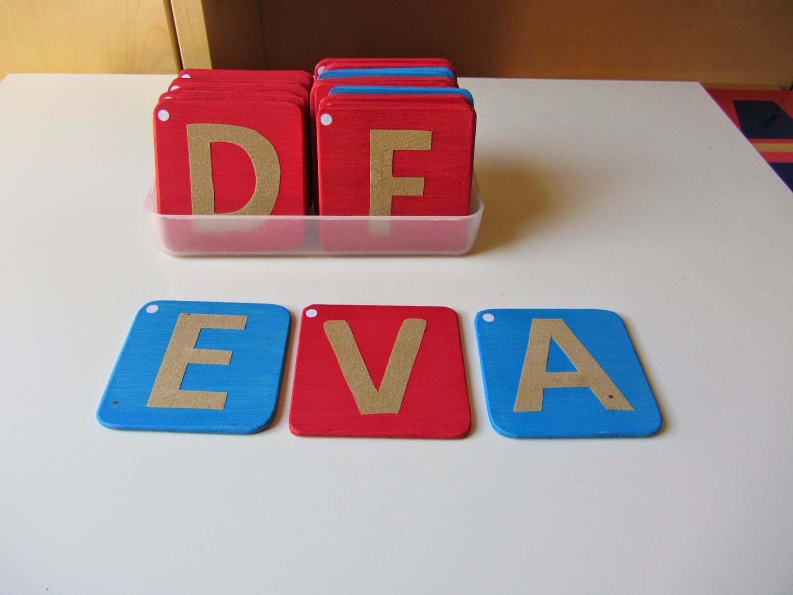
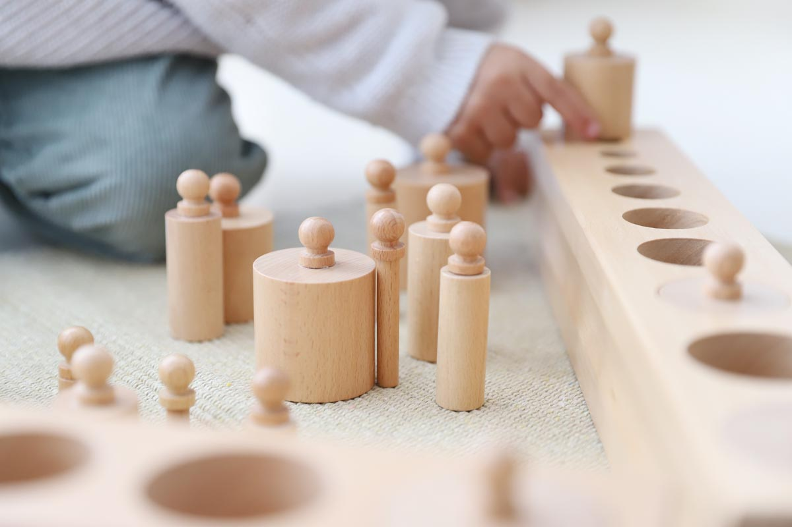

Materiales Montessori


Letras de Lija
Las Letras de Lija permiten al niño asociar sonido, forma y trazo, desarrollando conciencia fonética, memoria muscular y motricidad fina.
Comprar en Amazon

Cilindros con Botones
Material sensorial que ayuda a discriminar tamaños, fomentar la concentración y entrenar la coordinación ojo-mano.
Comprar en Amazon